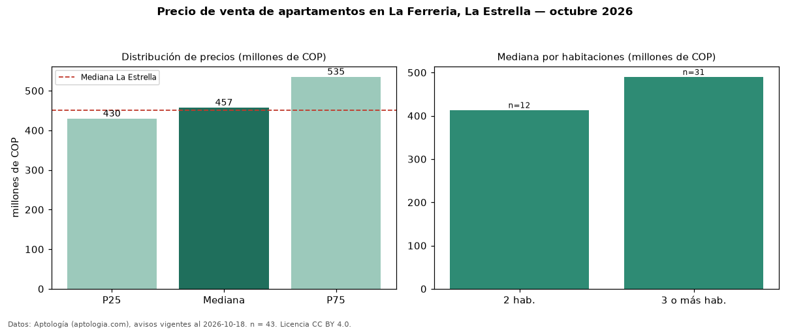

Precio de venta de apartamentos en La Ferreria, La Estrella — octubre 2026
En La Ferreria, La Estrella, la mediana de precio de venta de apartamentos es COP 457 millones, según 43 avisos vigentes. Prácticamente coincide con la mediana de La Estrella para apartamentos (COP 450 millones). Por metro cuadrado, la mediana es COP 6,82 millones/m² (n = 43 avisos con área), 6 % por encima de La Estrella (COP 6,44 millones/m²). Con el precio por m² de arriendo del mismo segmento (COP 36.066/m² al mes), la rentabilidad bruta implícita es 6,3 % anual (aproximación con medianas de ofertas distintas). El área mediana anunciada es 69 m². El segmento con más oferta es el de 3 o más habitaciones (31 avisos, mediana COP 490 millones); pasar de 2 habitaciones a 3 o más habitaciones cambia la mediana +19 %. La administración mediana declarada es COP 302.000 al mes (n = 27). Por precio mediano es el puesto 4 de 6 barrios de La Estrella con al menos 30 avisos de apartamentos en venta (COP): en la franja media. Datos: Aptología (aptologia.com), CC BY 4.0 — https://www.aptologia.com/venta/la-estrella/la-ferreria. Archivos: PDF, CSV con las cifras y gráfica PNG.

| Avisos únicos | 43 |
|---|---|
| Percentil 25 | COP 429.500.000 |
| Mediana | COP 457.269.300 |
| Percentil 75 | COP 535.000.000 |
| Mediana por m² | COP 6.823.529 |
Fuente: avisos vigentes de portales inmobiliarios recopilados por Aptología, deduplicados (mínimo 30 avisos únicos por celda). Precios pedidos, no cerrados. Fecha: 2026-10-18.